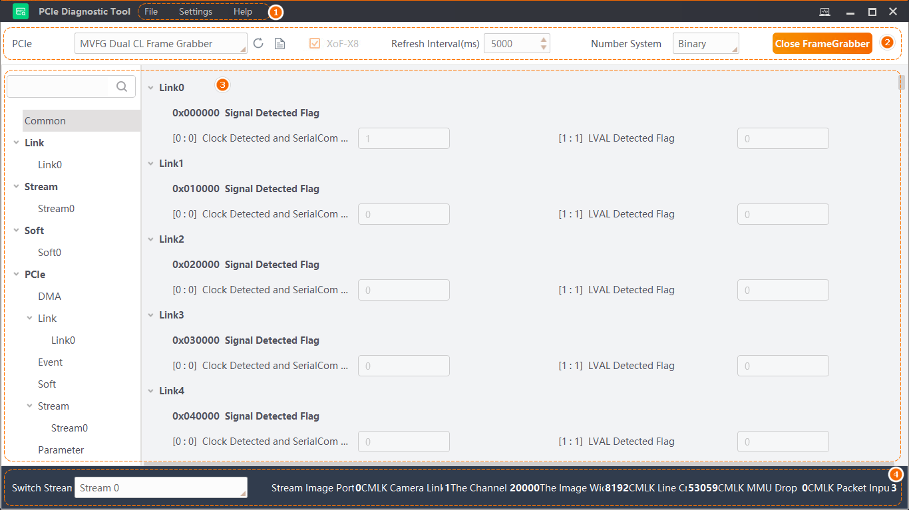

Tool Introduction
The PCIe diagnostics tool (hereinafter referred to as the "tool") can read the memory value of the frame grabber's debugging status in real time.
The Tool supports the following types of frame grabbers:
-
Camera Link frame grabber
-
Coax Press frame grabber
-
GigE frame grabber
-
10 GigE frame grabber (support some models)
-
XoFLink frame grabber
The main interface and the available functions/operations are shown below.

Figure 1 Main Interface|
No. |
Item |
Description |
|---|---|---|
|
1 |
Menu Bar |
The menu bar provides functions of importing/exporting data files, setting general parameters, and other operations for help.
|
|
2 |
Frame Grabber Settings |
You can select a frame grabber for real-time frame grabbing and perform the following operations in the setting area.
|
|
3 |
Diagnostic Monitoring |
You can monitor the memory value of the frame grabber's PCIe debugging status in real time in the diagnostic monitoring area. See details in Diagnostic Monitoring. |
|
4 |
Streaming Monitoring |
By selecting a stream type from the drop-down list in the Switch Stream area, you can monitor the streaming status of the frame grabber in real time, including the stream status and stream transmit status.
Note
The interface may vary with the frame grabber types. The actual interface shall prevail. |
 to refresh the frame grabber.
to refresh the frame grabber. in the upper-right corner to check
the memory and CPU usage.
in the upper-right corner to check
the memory and CPU usage.